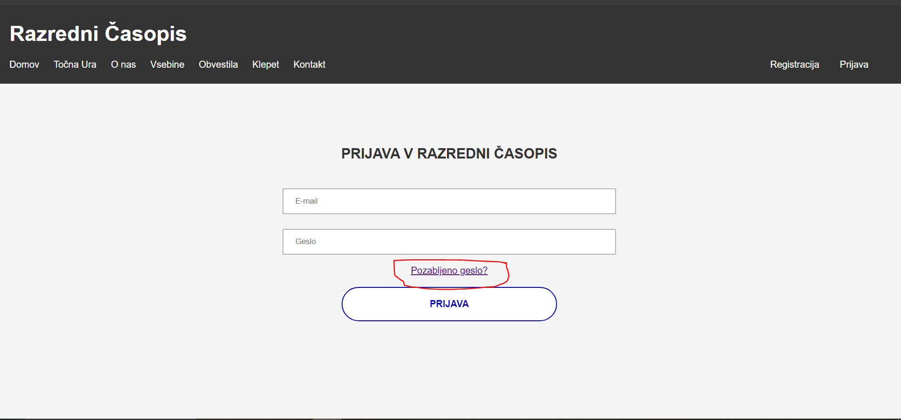
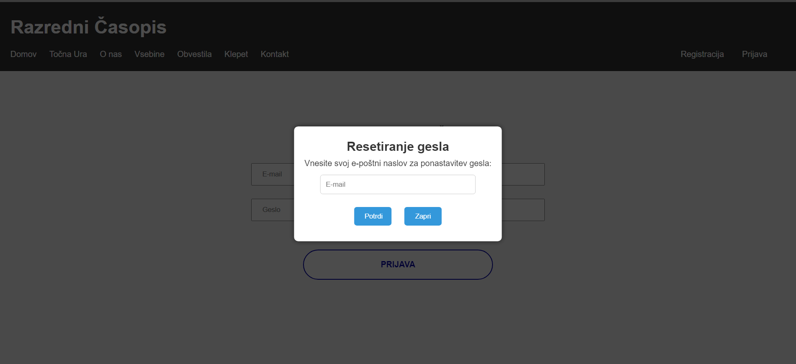
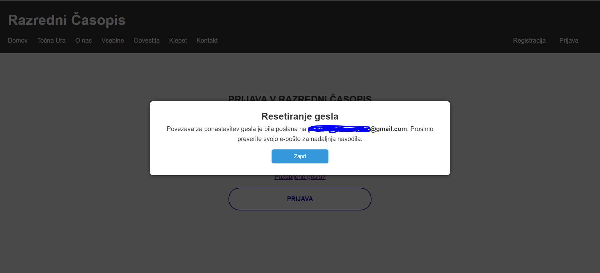
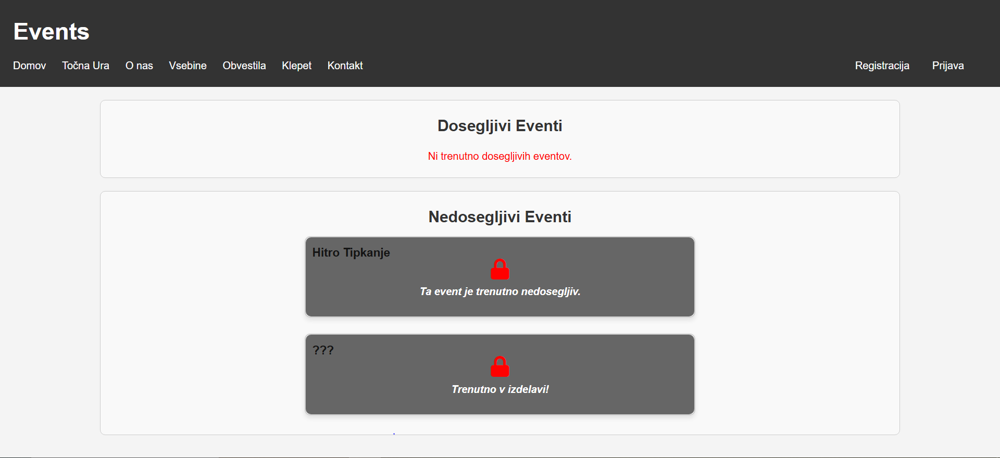

Stanje po nujnem vzdrževanju & novosti v verziji 2.1
Pravkar smo končali nujna dela ter popravke. Tu se nahajajo vse spremembe v verziji 2.1:
-
1. SISTEM ZA RAČUNE (Popravki)
Zaradi sprememb v sistemu ki ga uporabljamo za naše račune, je bilo potrebno predelati ter popraviti nekatere dele sistema za registracijo. Sedaj je sistem ponovno funkcionalen.
2. SISTEM ZA RAČUNE (Nov sistem - SPREMEMBA GESLA):
Sedaj je mogoča sprememba gesla na strani za prijavo. Le kliknite na novo povezavo, vnesite vaš e-mail naslov, ter sledite navodilom.



3. POPRAVKI (Celotna stran)
Popravili smo nekaj napak pri prikazovanju oken, čas na strani za vzdrževanje, ter nekaj majhnih slovničnih napak.
4. PREDOGLEDI (Načrti za prihodnost)
Trenutno načrtujemo še več manjših popravil ter priprave na December, saj bo le ta zelo napet! :)
Tu je predogled za eno izmed prihajajočih dejavnosti ki so trenutno v delu ter bodo kmalu na voljo.

Kot vedno, se iskreno opravičujemo za vse nevščečnosti zaradi nenadnega vzdrževanja ter se vam zahvaljujemo za vaše razumevanje.
Naša dogodivščina z stranjo je daleč od konca, in upamo da nas boste spodbujevali med našimi trudi o nadgradnji strani.
Kot vedno, lahko predlagate nove ideje ter nas obvestite o napakah na našem kontakt obrazcu.
Želimo vam vesel preostanek Novembra!
Ekipa Razrednega Časopisa